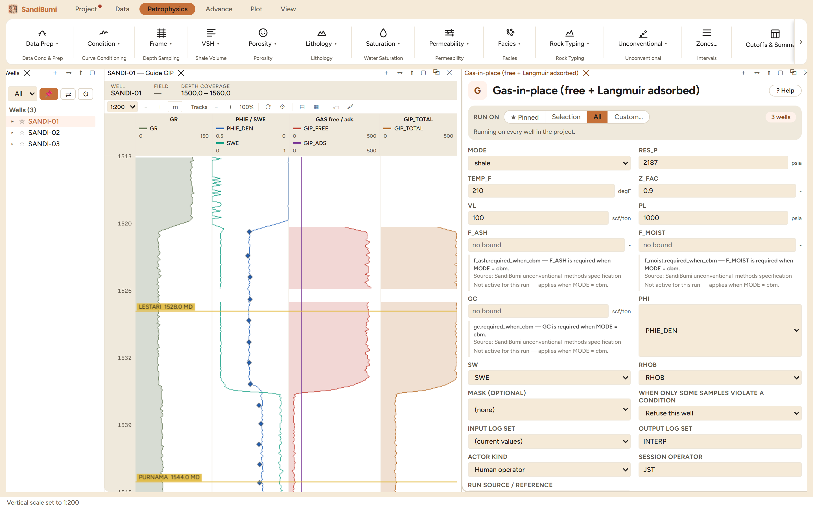

Gas-in-place (free + Langmuir adsorbed)
Per-sample gas-in-place as gas content (scf per ton of rock), so it composites like any curve: free gas from porosity and saturation through the gas formation-volume factor, adsorbed gas through the Langmuir isotherm, and their total. A CBM mode adds the dry-ash-free correction and the critical desorption pressure.
GIP_ADS = VL·P/(PL + P) GIP_FREE = 32.0368·φ·(1 − Sw)/(RHOB·Bg), Bg = 0.02827·z·T/P [T in Rankine] GIP_TOTAL = GIP_FREE + GIP_ADS cbm: GIP_ADS·(1 − F_ASH − F_MOIST); PCD = PL·GC/(VL − GC)
References
- Langmuir (1918), J. Am. Chem. Soc. 40(9): 1361-1403
- Mavor & Nelson (1996): the GRI petro-application of the isotherm
- Ambrose et al. (2010), SPE 131772
The Langmuir pair VL/PL ships absent and requires matching core desorption or isotherm data: an isotherm from another basin is the wrong isotherm. The Ambrose pore-volume correction is deferred, so high-TOC high-pressure free gas reads slightly high.
Step by step: gas-in-place as a curve
Gas-in-place per sample, as gas content (scf per ton of rock), so it composites like any other curve. Free gas comes from porosity and saturation through the gas formation-volume factor; adsorbed gas through the Langmuir isotherm; the total is their sum. CBM mode adds the dry-ash-free correction and, given a measured gas content, the critical desorption pressure.
First, the refusal
"VL must be set — Langmuir volume (max sorption)"
The Langmuir pair ships absent because an isotherm from another basin is the wrong isotherm: VL/PL come from matched core desorption or isotherm measurements, or the adsorbed term is not computable.
The picks, each with its defence
- VL 100 scf/ton / PL 1000 psia: the shale seeds this project's method record documents, standing in for the matched isotherm a synthetic delivery cannot have.
- RES_P 2187 psia, TEMP_F 210 °F: the precalc trends evaluated at 1530 m (hydrostatic pressure, the metric temperature trend).
- Z_FAC 0.9: the gas-correction module's Papay solve at these same conditions.

Run and read
On these wells: 3 clean. The adsorbed term is a near-constant ~69 scf/ton (the isotherm at one pressure), while free gas is 0 over most of the section and ~405 scf/ton across the gas sand, the split telling you what kind of resource this section would be. One caveat rides along from the method record: the Ambrose pore-volume correction is deferred, so high-TOC, high-pressure free gas reads slightly high.
What the application enforces
Everything below is generated from the same manifest the application builds this module’s pane from — descriptions, defaults, sources, ranges and pre-run checks here are exactly what the running application enforces.
Per-sample gas-in-place as gas CONTENT (scf per ton of rock), so it composites like any curve. Adsorbed via the Langmuir isotherm GIP_ADS = VL·P/(PL+P); free via GIP_FREE = 32.0368·φ·(1−Sw)/(RHOB·Bg) with Bg = 0.02827·z·T/P (T in Rankine); GIP_TOTAL = free + adsorbed. MODE=cbm applies the dry-ash-free correction GIP_ADS·(1−F_ASH−F_MOIST) and, given a measured in-situ gas content GC, emits the critical desorption pressure PCD = PL·GC/(VL−GC). Langmuir VL/PL ship absent and require matching core desorption/isotherm data. Ambrose pore-volume correction deferred. Cite: Langmuir 1918; Ambrose et al. 2010; GRI/Mavor-Nelson 1996. See docs/ref_unconventional.md §3.
Input curves
| Role | Description | Resolves to | Required | Notes |
|---|---|---|---|---|
| PHI | Porosity (effective, or OM-corrected total) | PHIE | yes | — |
| SW | Water saturation | SWE | yes | — |
| RHOB | Bulk density | RHOB | yes | — |
Parameters
Whole-well defaults; per-zone values from the Zones pane take precedence inside their zones (except where a parameter is marked one-value-per-well).
RES_P (psia)
Reservoir (pore) pressure
- No shipped default. You supply this value, and a run entering it explicitly must also cite the source that covers it.
- Accepted range: 1 to 30000 psia
TEMP_F (degF)
Reservoir temperature
- No shipped default. You supply this value, and a run entering it explicitly must also cite the source that covers it.
- Accepted range: 32 to 600 degF
Z_FAC (-)
Gas deviation (compressibility) factor z
- No shipped default. You supply this value, and a run entering it explicitly must also cite the source that covers it.
- Accepted range: 0.2 to 2 -
VL (scf/ton)
Langmuir volume (max sorption)
- No shipped default. You supply this value, and a run entering it explicitly must also cite the source that covers it.
- Accepted range: 0 to 5000 scf/ton
PL (psia)
Langmuir pressure (Gs = VL/2)
- No shipped default. You supply this value, and a run entering it explicitly must also cite the source that covers it.
- Accepted range: 1 to 30000 psia
F_ASH (-)
Ash weight fraction (cbm)
- No shipped default. You supply this value, and a run entering it explicitly must also cite the source that covers it.
- Accepted range: 0 to 1 -
- Checked before the run:
f_ash.required_when_cbm— F_ASH is required when MODE = cbm. Applies when: [object Object].Source: docs/PRD_v2/19_toc-unconventional.md SB-TOC-019 and §5
F_MOIST (-)
Moisture weight fraction (cbm)
- No shipped default. You supply this value, and a run entering it explicitly must also cite the source that covers it.
- Accepted range: 0 to 1 -
- Checked before the run:
f_moist.required_when_cbm— F_MOIST is required when MODE = cbm. Applies when: [object Object].Source: docs/PRD_v2/19_toc-unconventional.md SB-TOC-019 and §5
GC (scf/ton)
In-situ gas content for PCD (cbm; 0 = saturated)
- No shipped default. You supply this value, and a run entering it explicitly must also cite the source that covers it.
- Accepted range: 0 to 5000 scf/ton
- Checked before the run:
gc.required_when_cbm— GC is required when MODE = cbm. Applies when: [object Object].Source: docs/PRD_v2/19_toc-unconventional.md SB-TOC-019 and §5
Options
MODE
Reservoir type (cbm adds ash/moisture + critical desorption)
- Choices:
shalecbm
- Default:
shale
Output curves
| Name | Description |
|---|---|
| BG | Gas formation volume factor |
| GIP_ADS | Adsorbed gas content (Langmuir) |
| GIP_FREE | Free gas content |
| GIP_TOTAL | Total gas content (free + adsorbed) |
| PCD | Critical desorption pressure (cbm) |